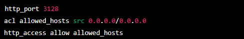
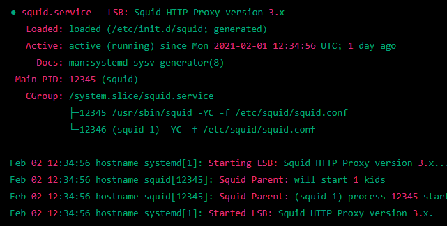

O que é Proxy?
Um servidor proxy fica à frente do cliente ou de uma rede de clientes e faz a intermediação do tráfego. Esse servidor proxy é outro computador conectado à internet, como seu computador, e ele tem seu próprio endereço IP. Seu computador se comunica apenas com o proxy e o proxy encaminha toda comunicação à internet.
Como instalar e utiliza o proxy:
1º Instale o Squid: "sudo apt-get install squid"
2º Configure o proxy: depois de instalar o pacote do proxy, você precisará configurá-lo com as informações do seu servidor proxy, incluindo o endereço do host e a porta.
3º Adicione as seguintes linhas no arquivo de configuração:
4º Reinicie o proxy: depois de configurar o proxy, você precisará reiniciá-lo para que as alterações entrem em vigor.
5º Verifique se o Squid está funcionando corretamente: "sudo service squid status"
Exemplo:
